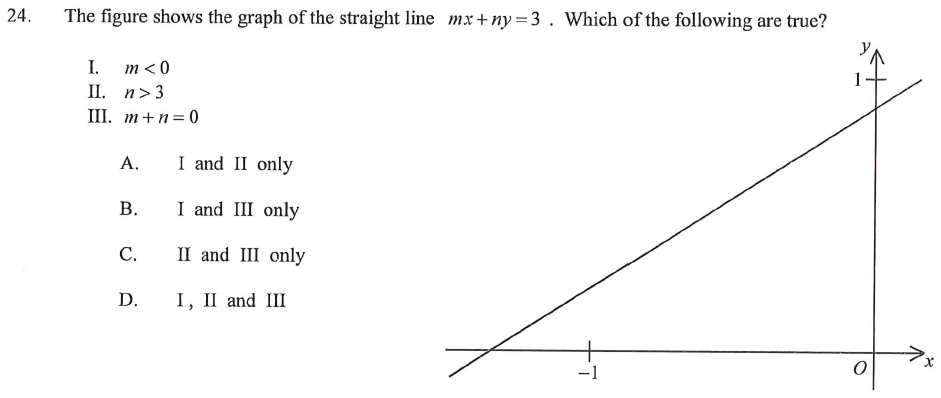

Graph of the straight line \(mx+ny=3\)
The figure shows the graph of the straight line \(mx+ny=3\). Which of the following are true?

Denote the line \(mx+ny=3\) by \(L\).
From the figure: \(L\) cuts the negative \(x\)-axis (a negative \(x\)-intercept) and cuts the positive \(y\)-axis at a point below \(1\). The line rises to the right, but gently.
So we need: \(\dfrac{3}{m}<0\), \(\dfrac{3}{n}>0\) and \(\dfrac{3}{n}<1\).
Set \(y=0\): \(\;mx=3\Rightarrow x=\dfrac{3}{m}\).
\(L\) has a negative \(x\)-intercept:
$$\frac{3}{m}<0 \;\Rightarrow\; m<0$$
✓ Statement I is TRUE.
Set \(x=0\): \(\;ny=3\Rightarrow y=\dfrac{3}{n}\).
\(L\) has a positive \(y\)-intercept: \(\dfrac{3}{n}>0\Rightarrow n>0\).
That \(y\)-intercept is smaller than \(1\):
$$\frac{3}{n}<1 \;\Rightarrow\; 3<n \;\Rightarrow\; n>3$$
✓ Statement II is TRUE.
Slope of \(L\) is \(-\dfrac{m}{n}\).
Slope of the line through \((-1,0)\) and \((0,1)\) is \(\dfrac{1-0}{0-(-1)}=1\).
Condition “slope of \(L\) smaller than \(1\)”:
$$-\frac{m}{n}<1 \;\Rightarrow\; -m<n \;\Rightarrow\; m+n>0$$
But \(m<0\) and \(n>0\) give no fixed sign of \(m+n\). For example \(m=-5,\;n=1\) gives \(m+n=-4<0\), which is impossible to decide from the figure alone.
✗ Statement III is NOT necessarily true.
Only statements I and II are true.